Unit 12
Organic Chemistry – Some Basic Principles and Techniques
Organic Chemistry – Some Basic Principles and Techniques

After studying this unit, you will be able to
In the previous unit you have learnt that the element carbon has the unique property called catenation due to which it forms covalent bonds with other carbon atoms. It also forms covalent bonds with atoms of other elements like hydrogen, oxygen, nitrogen, sulphur, phosphorus and halogens. The resulting compounds are studied under a separate branch of chemistry called organic chemistry. This unit incorporates some basic principles and techniques of analysis required for understanding the formation and properties of organic compounds.
12.1 GENERAL INTRODUCTION
Organic compounds are vital for sustaining life on earth and include complex molecules like genetic information bearing deoxyribonucleic acid (DNA) and proteins that constitute essential compounds of our blood, muscles and skin. Organic chemicals appear in materials like clothing, fuels, polymers, dyes and medicines. These are some of the important areas of application of these compounds.
Science of organic chemistry is about two hundred years old. Around the year 1780, chemists began to distinguish between organic compounds obtained from plants and animals and inorganic compounds prepared from mineral sources. Berzilius, a Swedish chemist proposed that a ‘vital force’ was responsible for the formation of organic compounds. However, this notion was rejected in 1828 when F. Wohler synthesised an organic compound, urea from an inorganic compound, ammonium cyanate.
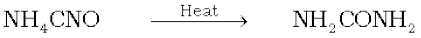
Ammonium cyanate Urea
The pioneering synthesis of acetic acid by Kolbe (1845) and that of methane by Berthelot (1856) showed conclusively that organic compounds could be synthesised from inorganic sources in a laboratory.
The development of electronic theory of covalent bonding ushered organic chemistry into its modern shape.
12.2 TETRAVALENCE OF CARBON: SHAPES OF ORGANIC COMPOUNDS
12.2.1 The Shapes of Carbon Compounds
The knowledge of fundamental concepts of molecular structure helps in understanding and predicting the properties of organic compounds. You have already learnt theories of valency and molecular structure in Unit 4. Also, you already know that tetravalence of carbon and the formation of covalent bonds by it are explained in terms of its electronic configuration and the hybridisation of s and p orbitals. It may be recalled that formation and the shapes of molecules like methane (CH4), ethene (C2H4), ethyne (C2H2) are explained in terms of the use of sp3, sp2 and sp hybrid orbitals by carbon atoms in the respective molecules.
Hybridisation influences the bond length and bond enthalpy (strength) in organic compounds. The sp hybrid orbital contains more s character and hence it is closer to its nucleus and forms shorter and stronger bonds than the sp3 hybrid orbital. The sp2 hybrid orbital is intermediate in s character between sp and sp3 and, hence, the length and enthalpy of the bonds it forms, are also intermediate between them. The change in hybridisation affects the electronegativity of carbon. The greater the s character of the hybrid orbitals, the greater is the electronegativity. Thus, a carbon atom having an sp hybrid orbital with 50% s character is more electronegative than that possessing sp2 or sp3 hybridised orbitals. This relative electronegativity is reflected in several physical and chemical properties of the molecules concerned, about which you will learn in later units.
12.2.2 Some Characteristic Features of π Bonds
In a π (pi) bond formation, parallel orientation of the two p orbitals on adjacent atoms is necessary for a proper sideways overlap. Thus, in H2C=CH2 molecule all the atoms must be in the same plane. The p orbitals are mutually parallel and both the p orbitals are perpendicular to the plane of the molecule. Rotation of one CH2 fragment with respect to other interferes with maximum overlap of p orbitals and, therefore, such rotation about carbon-carbon double bond (C=C) is restricted. The electron charge cloud of the π bond is located above and below the plane of bonding atoms. This results in the electrons being easily available to the attacking reagents. In general, π bonds provide the most reactive centres in the molecules containing multiple bonds.
Problem 12.1
How many σ and π bonds are present in each of the following molecules?
(a) HC≡CCH=CHCH3 (b) CH2=C=CHCH3
Solution
(a) σC – C: 4; σC–H : 6; πC=C :1; π C≡C:2
(b) σC – C: 3; σC–H: 6; πC=C: 2.
Problem 12.2
What is the type of hybridisation of each carbon in the following compounds?
(a) CH3Cl, (b) (CH3)2CO, (c) CH3CN,
(d) HCONH2, (e) CH3CH=CHCN
Solution
(a) sp3, (b) sp3, sp2, (c) sp3, sp, (d) sp2, (e) sp3, sp2, sp2, sp
Problem 12.3
Write the state of hybridisation of carbon in the following compounds and shapes of each of the molecules.
(a) H2C=O, (b) CH3F, (c) HC≡N.
Solution
(a) sp2 hybridised carbon, trigonal planar; (b) sp3 hybridised carbon, tetrahedral; (c) sp hybridised carbon, linear.
12.3 STRUCTURAL REPRESENTATIONS OF ORGANIC COMPOUNDS
12.3.1 Complete, Condensed and Bond-line Structural Formulas
Structures of organic compounds are represented in several ways. The Lewis structure or dot structure, dash structure, condensed structure and bond line structural formulas are some of the specific types. The Lewis structures, however, can be simplified by representing the two-electron covalent bond by a dash (–). Such a structural formula focuses on the electrons involved in bond formation. A single dash represents a single bond, double dash is used for double bond and a triple dash represents triple bond. Lone-pairs of electrons on heteroatoms (e.g., oxygen, nitrogen, sulphur, halogens etc.) may or may not be shown. Thus, ethane (C2H6), ethene (C2H4), ethyne (C2H2) and methanol (CH3OH) can be represented by the following structural formulas. Such structural representations are called complete structural formulas.
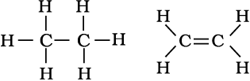
Ethane Ethene
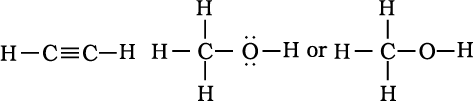
These structural formulas can be further abbreviated by omitting some or all of the dashes representing covalent bonds and by indicating the number of identical groups attached to an atom by a subscript. The resulting expression of the compound is called a condensed structural formula. Thus, ethane, ethene, ethyne and methanol can be written as:
CH3CH3 H2C=CH2 HC≡CH CH3OH
Ethane Ethene Ethyne Methanol
Similarly, CH3CH2CH2CH2CH2CH2CH2CH3 can be further condensed to CH3(CH2)6CH3. For further simplification, organic chemists use another way of representing the structures, in which only lines are used. In this bond-line structural representation of organic compounds, carbon and hydrogen atoms are not shown and the lines representing carbon-carbon bonds are drawn in a zig-zag fashion. The only atoms specifically written are oxygen, chlorine, nitrogen etc. The terminals denote methyl (–CH3) groups (unless indicated otherwise by a functional group), while the line junctions denote carbon atoms bonded to appropriate number of hydrogens required to satisfy the valency of the carbon atoms. Some of the examples are represented as follows:
(i) 3-Methyloctane can be represented in various forms as:
(a)
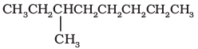
(b)
(c)

(ii) Various ways of representing 2-bromo butane are:
(a) CH3CHBrCH2CH3 (b) 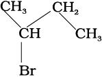
(c) 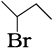
In cyclic compounds, the bond-line formulas may be given as follows:
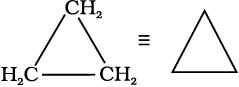
Cyclopropane
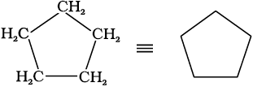
Cyclopentane
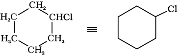
chlorocyclohexane
Problem 12.4
Expand each of the following condensed formulas into their complete structural formulas.
(a) CH3CH2COCH2CH3
(b) CH3CH=CH(CH2)3CH3
Solution
(a)
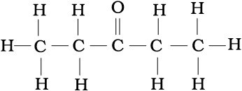
(b)
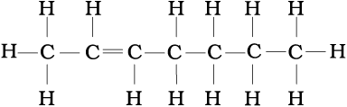
Problem 12.5
For each of the following compounds, write a condensed formula and also their bond-line formula.
(a) HOCH2CH2CH2CH(CH3)CH(CH3)CH3
(b) 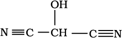
Solution
Condensed formula:
(a) HO(CH2)3CH(CH3)CH(CH3)2
(b) HOCH(CN)2
Bond-line formula:
(a)

(b)
Problem 12.6
Expand each of the following bond-line formulas to show all the atoms including carbon and hydrogen
(a)
(b)
(c)
(d)
Solution
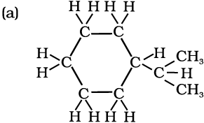
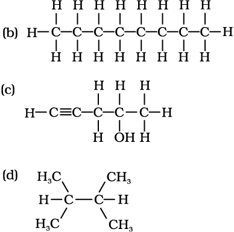
12.3.2 Three-Dimensional Representation of Organic Molecules
The three-dimensional (3-D) structure of organic molecules can be represented on paper by using certain conventions. For example, by using solid () and dashed () wedge formula, the 3-D image of a molecule from a two-dimensional picture can be perceived. In these formulas the solid-wedge is used to indicate a bond projecting out of the plane of paper, towards the observer. The dashed-wedge is used to depict the bond projecting out of the plane of the paper and away from the observer. Wedges are shown in such a way that the broad end of the wedge is towards the observer. The bonds lying in plane of the paper are depicted by using a normal line (—). 3-D representation of methane molecule on paper has been shown in Fig. 12.1.
Molecular Models
Molecular models are physical devices that are used for a better visualisation and perception of three-dimensional shapes of organic molecules. These are made of wood, plastic or metal and are commercially available. Commonly three types of molecular models are used: (1) Framework model, (2) Ball-and-stick model, and (3) Space filling model. In the framework model only the bonds connecting the atoms of a molecule and not the atoms themselves are shown. This model emphasizes the pattern of bonds of a molecule while ignoring the size of atoms. In the ball-and-stick model, both the atoms and the bonds are shown. Balls represent atoms and the stick denotes a bond. Compounds containing C=C (e.g., ethene) can best be represented by using springs in place of sticks. These models are referred to as ball-and-spring model. The space-filling model emphasises the relative size of each atom based on its van der Waals radius. Bonds are not shown in this model. It conveys the volume occupied by each atom in the molecule. In addition to these models, computer graphics can also be used for molecular modelling.
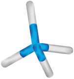 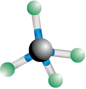
Framework model Ball and stick model
Space filling model
12.4 Classification of Organic Compounds
The existing large number of organic compounds and their ever-increasing numbers has made it necessary to classify them on the basis of their structures. Organic compounds are broadly classified as follows:
I. Acyclic or open chain compounds
These compounds are also called as aliphatic compounds and consist of straight or branched chain compounds, for example:
CH3CH3 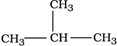
Ethane Isobutane
II Alicyclic or closed chain or ring compounds
Alicyclic (aliphatic cyclic) compounds contain carbon atoms joined in the form of a ring (homocyclic). Sometimes atoms other than carbon are also present in the ring (heterocylic). Some examples of this type of compounds are:
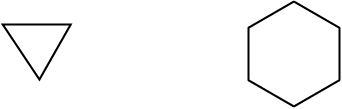
Cyclopropane Cyclohexane
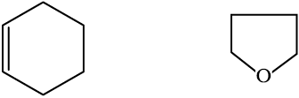
Cyclohexene Tetrahydrofuran
These exhibit some of the properties similar to those of aliphatic compounds.
Aromatic compounds
Aromatic compounds are special types of compounds. You will learn about these compounds in detail in Unit 13. These include benzene and other related ring compounds (benzenoid). Like alicyclic compounds, aromatic comounds may also have hetero atom in the ring. Such compounds are called hetrocyclic aromatic compounds. Some of the examples of various types of aromatic compounds are:
Benzenoid aromatic compounds

Benzene Aniline Naphthalene
Non-benzenoid compound
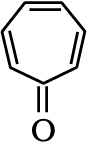
Tropolone
Heterocyclic aromatic compounds
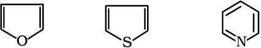
Furan Thiophene Pyridine
Organic compounds can als be classified on the basis of functional groups, into families or homologous series.
Functional Group
The functional group may be defined as an atom or group of atoms joined in a specific manner which is responsible for the characteristic chemical properties of the organic compounds. The examples are hydroxyl group (–OH), aldehyde group (–CHO) and carboxylic acid group (–COOH) etc.
Homologous Series
A group or a series of organic compounds each containing a characteristic functional group forms a homologous series and the members of the series are called homologues. The members of a homologous series can be represented by general molecular formula and the successive members differ from each other in molecular formula by a –CH2 unit. There are a number of homologous series of organic compounds. Some of these are alkanes, alkenes, alkynes, haloalkanes, alkanols, alkanals, alkanones, alkanoic acids, amines etc.
12.5 NOMENCLATURE OF ORGANIC COMPOUNDS
Organic chemistry deals with millions of compounds. In order to clearly identify them, a systematic method of naming has been developed and is known as the IUPAC (International Union of Pure and Applied Chemistry) system of nomenclature. In this systematic nomenclature, the names are correlated with the structure such that the reader or listener can deduce the structure from the name.
Before the IUPAC system of nomenclature, however, organic compounds were assigned names based on their origin or certain properties. For instance, citric acid is named so because it is found in citrus fruits and the acid found in red ant is named formic acid since the Latin word for ant is formica. These names are traditional and are considered as trivial or common names. Some common names are followed even today. For example, Buckminsterfullerene is a common name given to the newly discovered C60 cluster
(a form of carbon) noting its structural similarity to the geodesic domes popularised by the famous architect R. Buckminster Fuller. Common names are useful and in many cases indispensable, particularly when the alternative systematic names are lengthy and complicated. Common names of some organic compounds are given in Table 12.1.
Table 12.1 Common or Trivial Names of Some Organic Compounds
12.5.1 The IUPAC System of Nomenclature
A systematic name of an organic compound is generally derived by identifying the parent hydrocarbon and the functional group(s) attached to it. See the example given below.
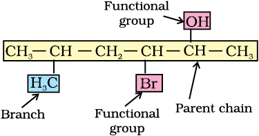
By further using prefixes and suffixes, the parent name can be modified to obtain the actual name. Compounds containing carbon and hydrogen only are called hydrocarbons. A hydrocarbon is termed saturated if it contains only carbon-carbon single bonds. The IUPAC name for a homologous series of such compounds is alkane. Paraffin (Latin: little affinity) was the earlier name given to these compounds. Unsaturated hydrocarbons are those, which contain at least one carbon-carbon double or triple bond.
12.5.2 IUPAC Nomenclature of Alkanes
Straight chain hydrocarbons: The names of such compounds are based on their chain structure, and end with suffix ‘-ane’ and carry a prefix indicating the number of carbon atoms present in the chain (except from CH4 to C4H10, where the prefixes are derived from trivial names). The IUPAC names of some straight chain saturated hydrocarbons are given in Table 12.2. The alkanes in Table 12.2 differ from each other by merely the number of -CH2 groups in the chain. They are homologues of alkane series.
Table 12.2 IUPAC Names of Some Unbranched Saturated Hydrocarbons
Branched chain hydrocarbons: In a branched chain compound small chains of carbon atoms are attached at one or more carbon atoms of the parent chain. The small carbon chains (branches) are called alkyl groups. For example:
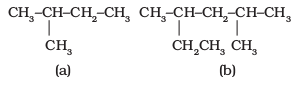
In order to name such compounds, the names of alkyl groups are prefixed to the name of parent alkane. An alkyl group is derived from a saturated hydrocarbon by removing a hydrogen atom from carbon. Thus, CH4 becomes -CH3 and is called methyl group. An alkyl group is named by substituting ‘yl’ for ‘ane’ in the corresponding alkane. Some alkyl groups are listed in Table 12.3.
Table 12.3 Some Alkyl Groups
Abbreviations are used for some alkyl groups. For example, methyl is abbreviated as Me, ethyl as Et, propyl as Pr and butyl as Bu. The alkyl groups can be branched also. Thus, propyl and butyl groups can have branched structures as shown below.
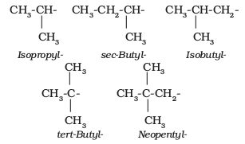
Common branched groups have specific trivial names. For example, the propyl groups can either be n-propyl group or isopropyl group. The branched butyl groups are called sec-butyl, isobutyl and tert-butyl group. We also encounter the structural unit, –CH2C(CH3)3, which is called neopentyl group.
Nomenclature of branched chain alkanes: We encounter a number of branched chain alkanes. The rules for naming them are given below.
1. First of all, the longest carbon chain in the molecule is identified. In the example (I) given below, the longest chain has nine carbons and it is considered as the parent or root chain. Selection of parent chain as shown in (II) is not correct because it has only eight carbons.
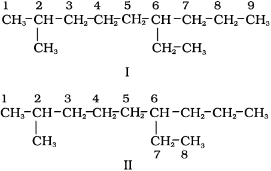
2. The carbon atoms of the parent chain are numbered to identify the parent alkane and to locate the positions of the carbon atoms at which branching takes place due to the substitution of alkyl group in place of hydrogen atoms. The numbering is done in such a way that the branched carbon atoms get the lowest possible numbers. Thus, the numbering in the above example should be from left to right (branching at carbon atoms 2 and 6) and not from right to left (giving numbers 4 and 8 to the carbon atoms at which branches are attached).
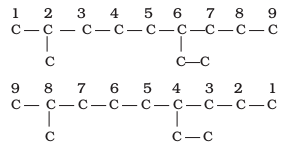
3. The names of alkyl groups attached as a branch are then prefixed to the name of the parent alkane and position of the substituents is indicated by the appropriate numbers. If different alkyl groups are present, they are listed in alphabetical order. Thus, name for the compound shown above is: 6-ethyl-2-methylnonane. [Note: the numbers are separated from the groups by hyphens and there is no break between methyl and nonane.]
4. If two or more identical substituent groups are present then the numbers are separated by commas. The names of identical substituents are not repeated, instead prefixes such as di (for 2), tri (for 3), tetra (for 4), penta (for 5), hexa (for 6) etc. are used. While writing the name of the substituents in alphabetical order, these prefixes, however, are not considered. Thus, the following compounds are named as:
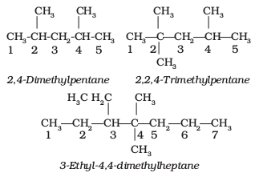
5. If the two substituents are found in equivalent positions, the lower number is given to the one coming first in the alphabetical listing. Thus, the following compound is 3-ethyl-6-methyloctane and not 6-ethyl-3-methyloctane.
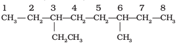
6. The branched alkyl groups can be named by following the above mentioned procedures. However, the carbon atom of the branch that attaches to the root alkane is numbered 1 as exemplified below.
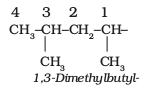
The name of such branched chain alkyl group is placed in parenthesis while naming the compound. While writing the trivial names of substituents’ in alphabetical order, the prefixes iso- and neo- are considered to be the part of the fundamental name of alkyl group. The prefixes sec- and tert- are not considered to be the part of the fundamental name. The use of iso and related common prefixes for naming alkyl groups is also allowed by the IUPAC nomenclature as long as these are not further substituted. In multi-substituted compounds, the following rules may aso be remembered:
5-(2-Ethylbutyl)-3,3-dimethyldecane
[and not 5-(2,2-Dimethylbutyl)-3-ethyldecane]
5-sec-Butyl-4-isopropyldecane
Cyclic Compounds: A saturated monocyclic compound is named by prefixing ‘cyclo’ to the corresponding straight chain alkane. If side chains are present, then the rules given above are applied. Names of some cyclic compounds are given below.
3-Ethyl-1,1-dimethylcyclohexane
(not 1-ethyl-3,3-dimethylcyclohexane)
Problem 12.7
Structures and IUPAC names of some hydrocarbons are given below. Explain why the names given in the parentheses are incorrect.

2,5,6- Trimethyloctane
[and not 3,4,7-Trimethyloctane
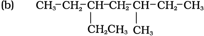
3-Ethyl-5-methylheptane
[and not 5-Ethyl-3-methylheptane
Solution
(a) Lowest locant number, 2,5,6 is lower than 3,5,7, (b) substituents are in equivalent position; lower number is given to the one that comes first in the name according to alphabetical order.
12.5.3 Nomenclature of Organic Compounds having Functional Group(s)
A functional group, as defined earlier, is an atom or a group of atoms bonded together in a unique manner which is usually the site of chemical reactivity in an organic molecule. Compounds having the same functional group undergo similar reactions. For example, CH3OH, CH3CH2OH, and (CH3)2CHOH — all having -OH functional group liberate hydrogen on reaction with sodium metal. The presence of functional groups enables systematisation of organic compounds into different classes. Examples of some functional groups with their prefixes and suffixes along with some examples of organic compounds possessing these are given in Table 12.4.
First of all, the functional group present in the molecule is identified which determines the choice of appropriate suffix. The longest chain of carbon atoms containing the functional group is numbered in such a way that the functional group is attached at the carbon atom possessing lowest possible number in the chain. By using the suffix as given in Table 12.4, the name of the compound is arrived at.
In the case of polyfunctional compounds, one of the functional groups is chosen as the principal functional group and the compound is then named on that basis. The remaining functional groups, which are subordinate functional groups, are named as substituents using the appropriate prefixes. The choice of principal functional group is made on the basis of order of preference. The order of decreasing priority for some functional groups is:
-COOH, –SO3H, -COOR (R=alkyl group), COCl,
-CONH2, -CN,-HC=O, >C=O, -OH, -NH2, >C=C<, -C≡C- .
The –R, C6H5-, halogens (F, Cl, Br, I), –NO2, alkoxy (–OR) etc. are always prefix substituents. Thus, a compound containing both an alcohol and a keto group is named as hydroxyalkanone since the keto group is preferred to the hydroxyl group.
For example, HOCH2(CH2)3CH2COCH3 will be named as 7-hydroxyheptan-2-one and not as 2-oxoheptan-7-ol. Similarly, BrCH2CH=CH2 is named as 3-bromoprop-1-ene and not 1-bromoprop-2-ene.
If more than one functional group of the same type are present, their number is indicated by adding di, tri, etc. before the class suffix. In such cases the full name of the parent alkane is written before the class suffix. For example CH2(OH)CH2(OH) is named as ethane–1,2–diol. However, the ending – ne of the parent alkane is dropped in the case of compounds having more than one double or triple bond; for example, CH2=CH-CH=CH2 is named as buta–1,3–diene.
Table 12.4 Some Functional Groups and Classes of Organic Compounds
Problem 12.8
Write the IUPAC names of the compounds i-iv from their given structures.
Solution
Hence, the systematic name of this compound is 6-Methyloctan-3-ol.
Solution
The functional group present is ketone (>C=O), hence suffix ‘-one’. Presence of two keto groups is indicated by ‘di’, hence suffix becomes ‘dione’. The two keto groups are at carbons 2 and 4. The longest chain contains 6 carbon atoms, hence, parent hydrocarbon is hexane. Thus, the systematic name is Hexane-2,4-dione.
Solution
Here, two functional groups namely ketone and carboxylic acid are present. The principal functional group is the carboxylic acid group; hence the parent chain will be suffixed with ‘oic’ acid. Numbering of the chain starts from carbon of – COOH functional group. The keto group in the chain at carbon 5 is indicated by ‘oxo’. The longest chain including the principal functional group has 6 carbon atoms; hence the parent hydrocarbon is hexane. The compound is, therefore, named as 5-Oxohexanoic acid.
Solution
The two C=C functional groups are present at carbon atoms 1 and 3, while the C≡C functional group is present at carbon 5. These groups are indicated by suffixes ‘diene’ and ‘yne’ respectively. The longest chain containing the functional groups has 6 carbon atoms; hence the parent hydrocarbon is hexane. The name of compound, therefore, is Hexa-1,3-dien-5-yne.
Problem 12.9
Derive the structure of (i) 2-Chlorohexane, (ii) Pent-4-en-2-ol, (iii) 3- Nitrocyclohexene, (iv) Cyclohex-2-en-1-ol, (v) 6-Hydroxy-heptanal.
Solution
(i) ‘hexane’ indicates the presence of 6 carbon atoms in the chain. The functional group chloro is present at carbon 2. Hence, the structure of the compound is CH3CH2CH2CH2CH(Cl)CH3.
(ii) ‘pent’ indicates that parent hydrocarbon contains 5 carbon atoms in the chain. ‘en’ and ‘ol’ correspond to the functional groups C=C and -OH at carbon atoms 4 and 2 respectively. Thus, the structure is
CH2=CHCH2CH (OH)CH3.
(iii) Six membered ring containing a carbon-carbon double bond is implied by cyclohexene, which is numbered as shown in (I). The prefix 3-nitro means that a nitro group is present on C-3. Thus, complete structural formula of the compound is (II). Double bond is suffixed functional group whereas NO2 is prefixed functional group therefore double bond gets preference over –NO2 group:

(iv) ‘1-ol’ means that a -OH group is present at C-1. OH is suffixed functional group and gets preference over C=C bond. Thus the structure is as shown
in (II):
(v) ‘heptanal’ indicates the compound to be an aldehyde containing 7 carbon atoms in the parent chain. The ‘6-hydroxy’ indicates that -OH group is present at carbon 6. Thus, the structural formula of the compound is: CH3CH(OH)CH2CH2CH2CH2CHO. Carbon atom of –CHO group is included while numbering the carbon chain.
12.5.4 Nomenclature of Substituted Benzene Compounds
For IUPAC nomenclature of substituted benzene compounds, the substituent is placed as prefix to the word benzene as shown in the following examples. However, common names (written in bracket below) of many substituted benzene compounds are also universally used.
If benzene ring is disubstituted, the position of substituents is defined by numbering the carbon atoms of the ring such that the substituents are located at the lowest numbers possible.For example, the compound(b) is named as 1,3-dibromobenzene and not as 1,5-dibromobenzene.

In the trivial system of nomenclature the terms ortho (o), meta (m) and para (p) are used as prefixes to indicate the relative positions 1,2-;1,3- and 1,4- respectively. Thus, 1,3-dibromobenzene (b) is named as m-dibromobenzene (meta is abbreviated as m-) and the other isomers of dibromobenzene 1,2-(a) and 1,4-(c), are named as ortho (or just o-) and para (or just p-)-dibromobenzene, respectively.
For tri - or higher substituted benzene derivatives, these prefixes cannot be used and the compounds are named by identifying substituent positions on the ring by following the lowest locant rule. In some cases, common name of benzene derivatives is taken as the base compound.
Substituent of the base compound is assigned number1 and then the direction of numbering is chosen such that the next substituent gets the lowest number. The substituents appear in the name in alphabetical order. Some examples are given below.
1-Chloro-2,4-dinitrobenzene
(not 4-chloro,1,3-dinitrobenzene)
2-Chloro-1-methyl-4-nitrobenzene
(not 4-methyl-5-chloro-nitrobenzene)
When a benzene ring is attached to an alkane with a functional group, it is considered as substituent, instead of a parent. The name for benzene as substituent is phenyl (C6H5-, also abbreviated as Ph).
Problem 12.10
Write the structural formula of:
(a) o-Ethylanisole, (b) p-Nitroaniline,
(c) 2,3 - Dibromo -1 - phenylpentane,
(d) 4-Ethyl-1-fluoro-2-nitrobenzene.
Solution
(a) (b)
(c) (d)
12.6 ISOMERISM
The phenomenon of existence of two or more compounds possessing the same molecular formula but different properties is known as isomerism. Such compounds are called as isomers. The following flow chart shows different types of isomerism.
12.6.1 Structural Isomerism
Compounds having the same molecular formula but different structures (manners in which atoms are linked) are classified as structural isomers. Some typical examples of different types of structural isomerism are given below:
(i) Chain isomerism: When two or more compounds have similar molecular formula but different carbon skeletons, these are referred to as chain isomers and the phenomenon is termed as chain isomerism. For example, C5H12 represents three compounds:
(ii) Position isomerism: When two or more compounds differ in the position of substituent atom or functional group on the carbon skeleton, they are called position isomers and this phenomenon is termed as position isomerism. For example, the molecular formula C3H8O represents two alcohols:
(iii) Functional group isomerism: Two or more compounds having the same molecular formula but different functional groups are called functional isomers and this phenomenon is termed as functional group isomerism. For example, the molecular formula C3H6O represents an aldehyde and a ketone:
(iv) Metamerism: It arises due to different alkyl chains on either side of the functional group in the molecule. For example, C4H10O represents methoxypropane (CH3OC3H7) and ethoxyethane (C2H5OC2H5).
12.6.2 Stereoisomerism
The compounds that have the same constitution and sequence of covalent bonds but differ in relative positions of their atoms or groups in space are called stereoisomers. This special type of isomerism is called as stereoisomerism and can be classified as geometrical and optical isomerism.
12.7 FUNDAMENTAL CONCEPTS IN ORGANIC REACTION MECHANISM
In an organic reaction, the organic molecule (also referred as a substrate) reacts with an appropriate attacking reagent and leads to the formation of one or more intermediate(s) and finally product(s)
The general reaction is depicted as follows :
Substrate is that reactant which supplies carbon to the new bond and the other reactant is called reagent. If both the reactants supply carbon to the new bond then choice is arbitrary and in that case the molecule on which attention is focused is called substrate.
In such a reaction a covalent bond between two carbon atoms or a carbon and some other atom is broken and a new bond is formed. A sequential account of each step, describing details of electron movement, energetics during bond cleavage and bond formation, and the rates of transformation of reactants into products (kinetics) is referred to as reaction mechanism. The knowledge of reaction mechanism helps in understanding the reactivity of organic compounds and in planning strategy for their synthesis.
In the following sections, we shall learn some of the principles that explain how these reactions take place.
12.7.1 Fission of a Covalent Bond
A covalent bond can get cleaved either by : (i) heterolytic cleavage, or by (ii) homolytic cleavage.
In heterolytic cleavage, the bond breaks in such a fashion that the shared pair of electrons remains with one of the fragments.
After heterolysis, one atom has a sextet electronic structure and a positive charge and the other, a valence octet with at least one lone pair and a negative charge. Thus, heterolytic cleavage of bromomethane will give and Br– as shown below.

A species having a carbon atom possessing sextext of electrons and a positive charge is called a carbocation (earlier called carbonium ion). The H3 ion is known as a methyl cation or methyl carbonium ion. Carbocations are classified as primary, secondary or tertiary depending on whether one, two or three carbons are directly attached to the positively charged carbon. Some other examples of carbocations are: CH3C+H2 (ethyl cation, a primary carbocation), (CH3)2C+H (isopropyl cation, a secondary carbocation), and (CH3)3C+ (tert-butyl cation, a tertiary carbocation). Carbocations are highly unstable and reactive species. Alkyl groups directly attached to the positively charged carbon stabilise the carbocations due to inductive and hyperconjugation effects, which you will be studying in the sections 12.7.5 and 12.7.9. The observed order of carbocation stability is: C+H3 < CH3C+H2 < (CH3)2C+H < (CH3)3C+. These carbocations have trigonal planar shape with positively charged carbon being sp2 hybridised. Thus, the shape of C+H3 may be considered as being derived from the overlap of three equivalent C(sp2) hybridised orbitals with 1s orbital of each of the three hydrogen atoms. Each bond may be represented as C(sp2)–H(1s) sigma bond. The remaining carbon orbital is perpendicular to the molecular plane and contains no electrons. (Fig. 12.3).
Fig. 12.3 Shape of methyl cation
The heterolytic cleavage can also give a species in which carbon gets the shared pair of electrons. For example, when group Z attached to the carbon leaves without
electron pair, the methyl anion  is formed. Such a carbon species carrying a negative charge on carbon atom is called carbanion. Carbanions are also unstable and reactive species. The organic reactions which proceed through heterolytic bond cleavage are called ionic or heteropolar or just polar reactions.
is formed. Such a carbon species carrying a negative charge on carbon atom is called carbanion. Carbanions are also unstable and reactive species. The organic reactions which proceed through heterolytic bond cleavage are called ionic or heteropolar or just polar reactions.
In homolytic cleavage, one of the electrons of the shared pair in a covalent bond goes with each of the bonded atoms. Thus, in homolytic cleavage, the movement of a single electron takes place instead of an electron pair. The single electron movement is shown by ‘half-headed’ (fish hook:) curved arrow. Such cleavage results in the formation of neutral species (atom or group) which contains an unpaired electron. These species are called free radicals. Like carbocations and carbanions, free radicals are also very reactive. A homolytic cleavage can be shown as:
Alkyl
free radical
Alkyl radicals are classified as primary, secondary, or tertiary. Alkyl radical stability increases as we proceed from primary to tertiary:
,
Methyl Ethyl Isopropyl Tert-butyl
free free free free
radical radical radical radical
Organic reactions, which proceed by homolytic fission are called free radical or homopolar or nonpolar reactions.
12.7.2 Nucleophiles and Electrophiles
A reagent that brings an electron pair is called a nucleophile (Nu:) i.e., nucleus seeking and the reaction is then called nucleophilic. A reagent that takes away an electron pair is called electrophile (E+) i.e., electron seeking and the reaction is called electrophilic.
During a polar organic reaction, a nucleophile attacks an electrophilic centre of the substrate which is that specific atom or part of the electrophile that is electron deficient. Similarly, the electrophiles attack at nucleophilic centre, which is the electron rich centre of the substrate. Thus, the electrophiles receive electron pair from nucleophile when the two undergo bonding interaction. A curved-arrow notation is used to show the movement of an electron pair from the nucleophile to the electrophile. Some examples of nucleophiles are the negatively charged ions with lone pair of electrons such as hydroxide (HO– ), cyanide (NC–) ions and carbanions (R3C:–). Neutral molecules such as etc., can also act as nucleophiles due to the presence of lone pair of electrons. Examples of electrophiles include carbocations () and neutral molecules having functional groups like carbonyl group (>C=O) or alkyl halides (R3C-X, where X is a halogen atom). The carbon atom in carbocations has sextet configuration; hence, it is electron deficient and can receive a pair of electrons from the nucleophiles. In neutral molecules such as alkyl halides, due to the polarity of the C-X bond a partial positive charge is generated on the carbon atom and hence the carbon atom becomes an electrophilic centre at which a nucleophile can attack.
Problem 12.11
Using curved-arrow notation, show the formation of reactive intermediates when the following covalent bonds undergo heterolytic cleavage.
(a) CH3–SCH3, (b) CH3–CN, (c) CH3–Cu
Solution
Problem 12.12
Giving justification, categorise the following molecules/ions as nucleophile or electrophile:
Solution
Nucleophiles: These species have unshared pair of electrons, which can be donated and shared with an electrophile.
Electrophiles:. Reactive sites have only six valence electrons; can accept electron pair from a nucleophile.
Problem 12.13
Identify electrophilic centre in the following: CH3CH=O, CH3CN, CH3I.
Solution
Among CH3HC*=O, H3CC*≡N, and
H3C*–I, the starred carbon atoms are electrophilic centers as they will have partial positive charge due to polarity of the bond.
12.7.3 Electron Movement in Organic Reactions
The movement of electrons in organic reactions can be shown by curved-arrow notation. It shows how changes in bonding occur due to electronic redistribution during the reaction. To show the change in position of a pair of electrons, curved arrow starts from the point from where an electron pair is shifted and it ends at a location to which the pair of electron may move.
Presentation of shifting of electron pair is given below :
(i) from π bond to adjacent bond position
(ii) from π bond to adjacent atom
(iii)  from atom to adjacent bond position
from atom to adjacent bond position
Movement of single electron is indicated by a single barbed ‘fish hooks’ (i.e. half headed curved arrow). For example, in transfer of hydroxide ion giving ethanol and in the dissociation of chloromethane, the movement of electron using curved arrows can be depicted as follows:
12.7.4 Electron Displacement Effects in Covalent Bonds
The electron displacement in an organic molecule may take place either in the ground state under the influence of an atom or a substituent group or in the presence of an appropriate attacking reagent. The electron displacements due to the influence of an atom or a substituent group present in the molecule cause permanent polarlisation of the bond. Inductive effect and resonance effects are examples of this type of electron displacements. Temporary electron displacement effects are seen in a molecule when a reagent approaches to attack it. This type of electron displacement is called electromeric effect or polarisability effect. In the following sections we will learn about these types of electronic displacements.
12.7.5 Inductive Effect
When a covalent bond is formed between atoms of different electronegativity, the electron density is more towards the more electronegative atom of the bond. Such a shift of electron density results in a polar covalent bond. Bond polarity leads to various electronic effects in organic compounds.
Let us consider cholorethane (CH3CH2Cl) in which the C–Cl bond is a polar covalent bond. It is polarised in such a way that the carbon-1 gains some positive charge (δ+) and the chlorine some negative charge (δ–). The fractional electronic charges on the two atoms in a polar covalent bond are denoted by symbol δ (delta) and the shift of electron density is shown by an arrow that points from δ+ to δ– end of the polar bond.
In turn carbon-1, which has developed partial positive charge (δ+) draws some electron density towards it from the adjacent C-C bond. Consequently, some positive charge (δδ+) develops on carbon-2 also, where δδ+ symbolises relatively smaller positive charge as compared to that on carbon – 1. In other words, the polar C – Cl bond induces polarity in the adjacent bonds. Such polarisation of σ-bond caused by the polarisation of adjacent σ-bond is referred to as the inductive effect. This effect is passed on to the subsequent bonds also but the effect decreases rapidly as the number of intervening bonds increases and becomes vanishingly small after three bonds. The inductive effect is related to the ability of substituent(s) to either withdraw or donate electron density to the attached carbon atom. Based on this ability, the substitutents can be classified as electron-withdrawing or electron donating groups relative to hydrogen. Halogens and many other groups such as nitro (- NO2), cyano (- CN), carboxy (- COOH), ester (-COOR), aryloxy (-OAr, e.g. – OC6H5), etc. are electron-withdrawing groups. On the other hand, the alkyl groups like methyl (–CH3) and ethyl (–CH2–CH3) are usually considered as electron donating groups.
Problem 12.14
Which bond is more polar in the following pairs of molecules: (a) H3C-H, H3C-Br (b) H3C-NH2, H3C-OH (c) H3C-OH, H3C-SH
Solution
(a) C–Br, since Br is more electronegative than H, (b) C–O, (c) C–O
Problem 12.15
In which C–C bond of CH3CH2CH2Br, the inductive effect is expected to be the least?
Solution
Magnitude of inductive effect diminishes as the number of intervening bonds increases. Hence, the effect is least in the bond between carbon-3 and hydrogen.
12.7.6 Resonance Structure
There are many organic molecules whose behaviour cannot be explained by a single Lewis structure. An example is that of benzene. Its cyclic structure containing alternating C–C single and C=C double bonds shown is inadequate for explaining its characteristic properties.
As per the above representation, benzene should exhibit two different bond lengths, due to C–C single and C=C double bonds. However, as determined experimentally benzene has a uniform C–C bond distances of 139 pm, a value intermediate between the C–C single(154 pm) and C=C double (134 pm) bonds. Thus, the structure of benzene cannot be represented adequately by the above structure. Further, benzene can be represented equally well by the energetically identical structures I and II.
Therefore, according to the resonance theory (Unit 4) the actual structure of benzene cannot be adequately represented by any of these structures, rather it is a hybrid of the two structures (I and II) called resonance structures. The resonance structures (canonical structures or contributing structures) are hypothetical and individually do not represent any real molecule. They contribute to the actual structure in proportion to their stability.
Another example of resonance is provided by nitromethane (CH3NO2) which can be represented by two Lewis structures, (I and II). There are two types of N-O bonds in these structures.
However, it is known that the two N–O bonds of nitromethane are of the same length (intermediate between a N–O single bond and a N=O double bond). The actual structure of nitromethane is therefore a resonance hybrid of the two canonical forms I and II.
The energy of actual structure of the molecule (the resonance hybrid) is lower than that of any of the canonical structures. The difference in energy between the actual structure and the lowest energy resonance structure is called the resonance stabilisation energy or simply the resonance energy. The more the number of important contributing structures, the more is the resonance energy. Resonance is particularly important when the contributing structures are equivalent in energy.
The following rules are applied while writing resonance structures:
The resonance structures have (i) the same positions of nuclei and (ii) the same number of unpaired electrons. Among the resonance structures, the one which has more number of covalent bonds, all the atoms with octet of electrons (except hydrogen which has a duplet), less separation of opposite charges, (a negative charge if any on more electronegative atom, a positive charge if any on more electropositive atom) and more dispersal of charge, is more stable than others.
Problem 12.16
Write resonance structures of CH3COO– and show the movement of electrons by curved arrows.
Solution
First, write the structure and put unshared pairs of valence electrons on appropriate atoms. Then draw the arrows one at a time moving the electrons to get the other structures.
Problem 12.17
Stability: I > II > III
Write resonance structures of
CH2=CH–CHO. Indicate relative stability of the contributing structures.
Solution
[I: Most stable, more number of covalent bonds, each carbon and oxygen atom has an octet and no separation of opposite charge II: negative charge on more electronegative atom and positive charge on more electropositive atom; III: does not contribute as oxygen has positive charge and carbon has negative charge, hence least stable].
Problem 12.18
Explain why the following two structures, I and II cannot be the major contributors to the real structure of CH3COOCH3.

Solution
The two structures are less important contributors as they involve charge separation. Additionally, structure I contains a carbon atom with an incomplete octet.
12.7.7 Resonance Effect
The resonance effect is defined as ‘the polarity produced in the molecule by the interaction of two π-bonds or between a π-bond and lone pair of electrons present on an adjacent atom’. The effect is transmitted through the chain. There are two types of resonance or mesomeric effect designated as R or M effect.
(i) Positive Resonance Effect (+R effect)
In this effect, the transfer of electrons is away from an atom or substituent group attached to the conjugated system. This electron displacement makes certain positions in the molecule of high electron densities. This effect in aniline is shown as :
(ii) Negative Resonance Effect (- R effect)
This effect is observed when the transfer of electrons is towards the atom or substituent group attached to the conjugated system. For example in nitrobenzene this electron displacement can be depicted as :
The atoms or substituent groups, which represent +R or –R electron displacement effects are as follows :
+R effect: – halogen, –OH, –OR, –OCOR, –NH2, –NHR, –NR2, –NHCOR,
– R effect: – COOH, –CHO, >C=O, – CN, –NO2
The presence of alternate single and double bonds in an open chain or cyclic system is termed as a conjugated system. These systems often show abnormal behaviour. The examples are 1,3- butadiene, aniline and nitrobenzene etc. In such systems, the π-electrons are delocalised and the system develops polarity.
12.7.8 Electromeric Effect (E effect)
It is a temporary effect. The organic compounds having a multiple bond (a double or triple bond) show this effect in the presence of an attacking reagent only. It is defined as the complete transfer of a shared pair of π-electrons to one of the atoms joined by a multiple bond on the demand of an attacking reagent. The effect is annulled as soon as the attacking reagent is removed from the domain of the reaction. It is represented by E and the shifting of the electrons is shown by a curved arrow (). There are two distinct types of electromeric effect.
(i) Positive Eelctromeric Effect (+E effect) In this effect the π−electrons of the multiple bond are transferred to that atom to which the reagent gets attached. For example :
(ii) Negative Electromeric Effect (–E effect) In this effect the π - electrons of the multiple bond are transferred to that atom to which the attacking reagent does not get attached. For example:

When inductive and electromeric effects operate in opposite directions, the electomeric effect predominates.
12.7.9 Hyperconjugation
Hyperconjugation is a general stabilising interaction. It involves delocalisation of σ electrons of C—H bond of an alkyl group directly attached to an atom of unsaturated system or to an atom with an unshared p orbital. The σ electrons of C—H bond of the alkyl group enter into partial conjugation with the attached unsaturated system or with the unshared p orbital. Hyperconjugation is a permanent effect.
To understand hyperconjugation effect, let us take an example of (ethyl cation) in which the positively charged carbon atom has an empty p orbital. One of the C-H bonds of the methyl group can align in the plane of this empty p orbital and the electrons constituting the C-H bond in plane with this p orbital can then be delocalised into the empty p orbital as depicted in Fig. 12.4 (a).
Fig. 12.4(a) Orbital diagram showing hyperconjugation in ethyl cation
This type of overlap stabilises the carbocation because electron density from the adjacent σ bond helps in dispersing the positive charge.
In general, greater the number of alkyl groups attached to a positively charged carbon atom, the greater is the hyperconjugation interaction and stabilisation of the cation. Thus, we have the following relative stability of carbocations :
Hyperconjugation is also possible in alkenes and alkylarenes.
Delocalisation of electrons by hyperconjugation in the case of alkene can be depicted as in Fig. 12.4(b).
There are various ways of looking at the hyperconjugative effect. One of the way is to regard C—H bond as possessing partial ionic character due to resonance.
The hyperconjugation may also be regarded as no bond resonance.
Problem 12.19
Explain why (CH3)3C+ is more stable than  is the least stable cation.
is the least stable cation.
Solution
Hyperconjugation interaction in (CH3)3C+ is greater than in as the (CH3)3C+ has nine C-H bonds. In , vacant p orbital is perpendicular to the plane in which C-H bonds lie; hence cannot overlap with it. Thus,  lacks hyperconjugative stability.
lacks hyperconjugative stability.
12.7.10 Types of Organic Reactions and Mechanisms
Organic reactions can be classified into the following categories:
(i) Substitution reactions
(ii) Addition reactions
(iii) Elimination reactions
(iv) Rearrangement reactions
You will be studying these reactions in Unit 13 and later in class XII.
12.8 Methods of Purification of Organic Compounds
Once an organic compound is extracted from a natural source or synthesised in the laboratory, it is essential to purify it. Various methods used for the purification of organic compounds are based on the nature of the compound and the impurity present in it.
The common techniques used for purification are as follows :
(i) Sublimation
(ii) Crystallisation
(iii) Distillation
(iv) Differential extraction and
(v) Chromatography
Finally, the purity of a compound is ascertained by determining its melting or boiling point. Most of the pure compounds have sharp melting points and boiling points. New methods of checking the purity of an organic compound are based on different types of chromatographic and spectroscopic techniques.
12.8.1 Sublimation
You have learnt earlier that on heating, some solid substances change from solid to vapour state without passing through liquid state. The purification technique based on the above principle is known as sublimation and is used to separate sublimable compounds from non-sublimable impurities.
12.8.2 Crystallisation
This is one of the most commonly used techniques for the purification of solid organic compounds. It is based on the difference in the solubilities of the compound and the impurities in a suitable solvent. The impure compound is dissolved in a solvent in which it is sparingly soluble at room temperature but appreciably soluble at higher temperature. The solution is concentrated to get a nearly saturated solution. On cooling the solution, pure compound crystallises out and is removed by filtration. The filtrate (mother liquor) contains impurities and small quantity of the compound. If the compound is highly soluble in one solvent and very little soluble in another solvent, crystallisation can be satisfactorily carried out in a mixture of these solvents. Impurities, which impart colour to the solution are removed by adsorbing over activated charcoal. Repeated crystallisation becomes necessary for the purification of compounds containing impurities of comparable solubilities.
12.8.3 Distillation
This important method is used to separate (i) volatile liquids from nonvolatile impurities and (ii) the liquids having sufficient difference in their boiling points. Liquids having different boiling points vaporise at different temperatures. The vapours are cooled and the liquids so formed are collected separately. Chloroform (b.p 334 K) and aniline (b.p. 457 K) are easily separated by the technique of distillation (Fig 12.5). The liquid mixture is taken in a round bottom flask and heated carefully.
Fig.12.5 Simple distillation. The vapours of a substance formed are condensed and the liquid is collected in conical flask.
On boiling, the vapours of lower boiling component are formed first. The vapours are condensed by using a condenser and the liquid is collected in a receiver. The vapours of higher boiling component form later and the liquid can be collected separately.
Fractional Distillation: If the difference in boiling points of two liquids is not much, simple distillation cannot be used to separate them. The vapours of such liquids are formed within the same temperature range and are condensed simultaneously. The technique of fractional distillation is used in such cases. In this technique, vapours of a liquid mixture are passed through a fractionating column before condensation. The fractionating column is fitted over the mouth of the round bottom flask (Fig.12.6).
Fig.12.6 Fractional distillation. The vapours of lower boiling fraction reach the top of the column first followed by vapours of higher boiling fractions.
Vapours of the liquid with higher boiling point condense before the vapours of the liquid with lower boiling point. The vapours rising up in the fractionating column become richer in more volatile component. By the time the vapours reach to the top of the fractionating column, these are rich in the more volatile component. Fractionating columns are available in various sizes and designs as shown in Fig.12.7. A fractionating column provides many surfaces for heat exchange between the ascending vapours and the descending condensed liquid. Some of the condensing liquid in the fractionating column obtains heat from the ascending vapours and revaporises. The vapours thus become richer in low boiling component. The vapours of low boiling component ascend to the top of the column. On reaching the top, the vapours become pure in low boiling component and pass through the condenser and the pure liquid is collected in a receiver. After a series of successive distillations, the remaining liquid in the distillation flask gets enriched in high boiling component. Each successive condensation and vaporisation unit in the fractionating column is called a theoretical plate. Commercially, columns with hundreds of plates are available.
One of the technological applications of fractional distillation is to separate different fractions of crude oil in petroleum industry.
Distillation under reduced pressure: This method is used to purify liquids having very high boiling points and those, which decompose at or below their boiling points. Such liquids are made to boil at a temperature lower than their normal boiling points by reducing the pressure on their surface. A liquid boils at a temperature at which its vapour pressure is equal to the external pressure. The pressure is reduced with the help of a water pump or vacuum pump (Fig.12.8). Glycerol can be separated from spent-lye in soap industry by using this technique.
Steam Distillation: This technique is applied to separate substances which are steam volatile and are immiscible with water. In steam distillation, steam from a steam generator is passed through a heated flask containing the liquid to be distilled. The mixture of steam and the volatile organic compound is condensed and collected. The compound is later separated from water using a separating funnel. In steam distillation, the liquid boils when the sum of vapour pressures due to the organic liquid (p1) and that due to water (p2) becomes equal to the atmospheric pressure (p), i.e. p =p1+ p2. Since p1 is lower than p, the organic liquid vaporises at lower temperature than its boiling point.
Thus, if one of the substances in the mixture is water and the other, a water insoluble substance, then the mixture will boil close to but below, 373K. A mixture of water and the substance is obtained which can be separated by using a separating funnel. Aniline is separated by this technique from aniline – water mixture (Fig.12.9).
12.8.4 Differential Extraction
When an organic compound is present in an aqueous medium, it is separated by shaking it with an organic solvent in which it is more soluble than in water.
Fig.12.8 Distillation under reduced pressure. A liquid boils at a temperature below its vapour pressure by reducing the pressure.
The organic solvent and the aqueous solution should be immiscible with each other so that they form two distinct layers which can be separated by separatory funnel. The organic solvent is later removed by distillation or by evaporation to get back the compound. Differential extraction is carried out in a separatory funnel as shown in Fig. 12.10. If the organic compound is less soluble in the organic solvent, a very large quantity of solvent would be required to extract even a very small quantity of the compound. The technique of continuous extraction is employed in such cases. In this technique same solvent is repeatedly used for extraction of the compound.
12.8.5 Chromatography
Chromatography is an important technique extensively used to separate mixtures into their components, purify compounds and also to test the purity of compounds. The name chromatography is based on the Greek word chroma, for colour since the method was first used for the separation of coloured substances found in plants. In this technique, the mixture of substances is applied onto a stationary phase, which may be a solid or a liquid. A pure solvent, a mixture of solvents, or a gas is allowed to move slowly over the stationary phase. The components of the mixture get gradually separated from one another. The moving phase is called the mobile phase.
Based on the principle involved, chromatography is classified into different categories. Two of these are:
(a) Adsorption chromatography, and
(b) Partition chromatography.
a) Adsorption Chr omatography: Adsor-ption chromatography is based on the fact that different compounds are adsorbed on an adsorbent to different degrees. Commonly used adsorbents are silica gel and alumina. When a mobile phase is allowed to move over a stationary phase (adsorbent), the components of the mixture move by varying distances over the stationary phase. Following are two main types of chromatographic techniques based on the principle of differential adsorption.
(a) Column chromatography, and
(b) Thin layer chromatography.
Column Chromatography: Column chromatography involves separation of a mixture over a column of adsorbent (stationary phase) packed in a glass tube. The column is fitted with a stopcock at its lower end (Fig. 12.11). The mixture adsorbed on adsorbent is placed on the top of the adsorbent column packed in a glass tube. An appropriate eluant which is a liquid or a mixture of liquids is allowed to flow down the column slowly. Depending upon the degree to which the compounds are adsorbed, complete separation takes place. The most readily adsorbed substances are retained near the top and others come down to various distances in the column (Fig.12.11).
Thin Layer Chromatography: Thin layer chromatography (TLC) is another type of adsorption chromatography, which involves separation of substances of a mixture over a thin layer of an adsorbent coated on glass plate. A thin layer (about 0.2mm thick) of an adsorbent (silica gel or alumina) is spread over a glass plate of suitable size. The plate is known as thin layer chromatography plate or chromaplate.
The solution of the mixture to be separated is applied as a small spot about 2 cm above one end of the TLC plate. The glass plate is then placed in a closed jar containing the eluant (Fig. 12.12a). As the eluant rises up the plate, the components of the mixture move up along with the eluant to different distances depending on their degree of adsorption and separation takes place. The relative adsorption of each component of the mixture is expressed in terms of its retardation factor i.e. Rf value (Fig.12.12 b).
The spots of coloured compounds are visible on TLC plate due to their original colour. The spots of colourless compounds, which are invisible to the eye but fluoresce in ultraviolet light, can be detected by putting the plate under ultraviolet light. Another detection technique is to place the plate in a covered jar containing a few crystals of iodine. Spots of compounds, which adsorb iodine, will show up as brown spots. Sometimes an appropriate reagent may also be sprayed on the plate. For example, amino acids may be detected by spraying the plate with ninhydrin solution (Fig.12.12b).
Partition Chromatography: Partition chromatography is based on continuous differential partitioning of components of a mixture between stationary and mobile phases. Paper chromatography is a type of partition chromatography. In paper chromatography, a special quality paper known as chromatography paper is used. Chromatography paper contains water trapped in it, which acts as the stationary phase.
A strip of chromatography paper spotted at the base with the solution of the mixture is suspended in a suitable solvent or a mixture of solvents (Fig. 12.13). This solvent acts as the mobile phase. The solvent rises up the paper by capillary action and flows over the spot. The paper selectively retains different components according to their differing partition in the two phases. The paper strip so developed is known as a chromatogram. The spots of the separated coloured compounds are visible at different heights from the position of initial spot on the chromatogram. The spots of the separated colourless compounds may be observed either under ultraviolet light or by the use of an appropriate spray reagent as discussed under thin layer chromatography.
12.9 QUALITATIVE ANALYSIS OF ORGANIC COMPOUNDS
The elements present in organic compounds are carbon and hydrogen. In addition to these, they may also contain oxygen, nitrogen, sulphur, halogens and phosphorus.
12.9.1 Detection of Carbon and Hydrogen
Carbon and hydrogen are detected by heating the compound with copper(II) oxide. Carbon present in the compound is oxidised to carbon dioxide (tested with lime-water, which develops turbidity) and hydrogen to water (tested with anhydrous copper sulphate, which turns blue).
C + 2CuO  2Cu + CO2
2Cu + CO2
2H + CuO Cu + H2O
CO2 + Ca(OH)2 → CaCO3↓ + H2O
5H2O + CuSO4 → CuSO4.5H2O
White Blue
12.9.2 Detection of Other Elements
Nitrogen, sulphur, halogens and phosphorus present in an organic compound are detected by “Lassaigne’s test”. The elements present in the compound are converted from covalent form into the ionic form by fusing the compound with sodium metal. Following reactions take place:
Na + C + N  NaCN
NaCN
2Na + S  Na2S
Na2S
Na + X  Na X
Na X
(X = Cl, Br or I)
C, N, S and X come from organic compound.
Cyanide, sulphide and halide of sodium so formed on sodium fusion are extracted from the fused mass by boiling it with distilled water. This extract is known as sodium fusion extract.
(A) Test for Nitrogen
The sodium fusion extract is boiled with iron(II) sulphate and then acidified with concentrated sulphuric acid. The formation of Prussian blue colour confirms the presence of nitrogen. Sodium cyanide first reacts with iron(II)sulphate and forms sodium hexacyanoferrate(II). On heating with concentrated sulphuric acid some iron(II) ions are oxidised to iron(III) ions which react with sodium hexacyanoferrate(II) to produce iron(III) hexacyanoferrate(II) (ferriferrocyanide) which is Prussian blue in colour.
6CN– + Fe2+ → [Fe(CN)6]4–
3[Fe(CN)6]4– + 4Fe3+ Fe4[Fe(CN)6]3.xH2O
Prussian blue
(B) Test for Sulphur
(a) The sodium fusion extract is acidified with acetic acid and lead acetate is added to it. A black precipitate of lead sulphide indicates the presence of sulphur.
S2– + Pb2+ → PbS
Black
(b) On treating sodium fusion extract with sodium nitroprusside, appearance of a violet colour further indicates the presence of sulphur.
S2– + [Fe(CN)5NO]2– → [Fe(CN)5NOS]4–
Violet
In case, nitrogen and sulphur both are present in an organic compound, sodium thiocyanate is formed. It gives blood red colour and no Prussian blue since there are no free cyanide ions.
Na + C + N + S → NaSCN
Fe3+ +SCN– → [Fe(SCN)]2+
Blood red
If sodium fusion is carried out with excess of sodium, the thiocyanate decomposes to yield cyanide and sulphide. These ions give their usual tests.
NaSCN + 2Na → NaCN+Na2S
(C) Test for Halogens
The sodium fusion extract is acidified with nitric acid and then treated with silver nitrate. A white precipitate, soluble in ammonium hydroxide shows the presence of chlorine, a yellowish precipitate, sparingly soluble in ammonium hydroxide shows the presence of bromine and a yellow precipitate, insoluble in ammonium hydroxide shows the presence of iodine.
X– + Ag+ → AgX
X represents a halogen – Cl, Br or I.
If nitrogen or sulphur is also present in the compound, the sodium fusion extract is first boiled with concentrated nitric acid to decompose cyanide or sulphide of sodium formed during Lassaigne’s test. These ions would otherwise interfere with silver nitrate test for halogens.
(D) Test for Phosphorus
The compound is heated with an oxidising agent (sodium peroxide). The phosphorus present in the compound is oxidised to phosphate. The solution is boiled with nitric acid and then treated with ammonium molybdate. A yellow colouration or precipitate indicates the presence of phosphorus.
12.10 QUANTITATIVE ANALYSIS
The percentage composition of elements present in an organic compound is determined by the methods based on the following principles:
12.10.1 Carbon and Hydrogen
Both carbon and hydrogen are estimated in one experiment. A known mass of an organic compound is burnt in the presence of excess of oxygen and copper(II) oxide. Carbon and hydrogen in the compound are oxidised to carbon dioxide and water respectively.
CxHy + (x + y/4) O2 → x CO2 + (y/2) H2O
The mass of water produced is determined by passing the mixture through a weighed U-tube containing anhydrous calcium chloride. Carbon dioxide is absorbed in another U-tube containing concentrated solution of potassium hydroxide. These tubes are connected in series (Fig.12.14). The increase in masses of calcium chloride and potassium hydroxide gives the amounts of water and carbon dioxide from which the percentages of carbon and hydrogen are calculated.
Fig.12.14 Estimation of carbon and hydrogen. Water and carbon dioxide formed on oxidation of substance are absorbed in anhydrous calcium chloride and potassium hydroxide solutions respectively contained in U tubes.
Let the mass of organic compound be m g, mass of water and carbon dioxide produced be m1 and m2 g respectively;
Percentage of carbon=
Percentage of hydrogen = 
Problem 12.20
On complete combustion, 0.246 g of an organic compound gave 0.198g of carbon dioxide and 0.1014g of water. Determine the percentage composition of carbon and hydrogen in the compound.
Solution
Percentage of hydrogen = 
= 4.58%
12.10.2 Nitrogen
There are two methods for estimation of nitrogen: (i) Dumas method and (ii) Kjeldahl’s method.
(i) Dumas method: The nitrogen containing organic compound, when heated with copper oxide in an atmosphere of carbon dioxide, yields free nitrogen in addition to carbon dioxide and water.
CxHyNz + (2x + y/2) CuO → x CO2 + y/2 H2O + z/2 N2 + (2x + y/2) Cu
Traces of nitrogen oxides formed, if any, are reduced to nitrogen by passing the gaseous mixture over a heated copper gauze. The mixture of gases so produced is collected over an aqueous solution of potassium hydroxide which absorbs carbon dioxide. Nitrogen is collected in the upper part of the graduated tube (Fig.12.15).
Fig.12.15 Dumas method. The organic compound yields nitrogen gas on heating it with copper(II) oxide in the presence of CO2 gas. The mixture of gases is collected over potassium hydroxide solution in which CO2 is absorbed and volume of nitrogen gas is determined.
Let the mass of organic compound = m g
Volume of nitrogen collected = V1 mL
Room temperature = T1K
(Let it be V mL)
Where p1 and V1 are the pressure and volume of nitrogen, p1 is different from the atmospheric pressure at which nitrogen gas is collected. The value of p1 is obtained by the relation;
p1= Atmospheric pressure – Aqueous tension
22400 mL N2 at STP weighs 28 g.
Percentage of nitrogen = 
Problem 12.21
In Dumas’ method for estimation of nitrogen, 0.3g of an organic compound gave 50mL of nitrogen collected at 300K temperature and 715mm pressure. Calculate the percentage composition of nitrogen in the compound. (Aqueous tension at 300K=15 mm)
Solution
Volume of nitrogen collected at 300K and 715mm pressure is 50 mL
Actual pressure = 715-15 =700 mm
22,400 mL of N2 at STP weighs = 28 g
Percentage of nitrogen =
(ii) Kjeldahl’s method: The compound containing nitrogen is heated with concentrated sulphuric acid. Nitrogen in the compound gets converted to ammonium sulphate (Fig. 12.16). The resulting acid mixture is then heated with excess of sodium hydroxide.
Fig.12.16 Kjeldahl method. Nitrogen-containing compound is treated with concentrated H2SO4 to get ammonium sulphate which liberates ammonia on treating with NaOH; ammonia is absorbed in known volume of standard acid.
The liberated ammonia gas is absorbed in an excess of standard solution of sulphuric acid. The amount of ammonia produced is determined by estimating the amount of sulphuric acid consumed in the reaction. It is done by estimating unreacted sulphuric acid left after the absorption of ammonia by titrating it with standard alkali solution. The difference between the initial amount of acid taken and that left after the reaction gives the amount of acid reacted with ammonia.
Organic compound + H2SO4 → (NH4)2SO4

2NH3 + H2SO4 → (NH4)2SO4
Let the mass of organic compound taken = m g
Volume of H2SO4 of molarity, M,
taken = V mL
Volume of NaOH of molarity, M, used for titration of excess of H2SO4 = V1 mL
V1mL of NaOH of molarity M
= V1 /2 mL of H2SO4 of molarity M
Volume of H2SO4 of molarity M unused
= (V - V1/2) mL
(V- V1/2) mL of H2SO4 of molarity M
= 2(V-V1/2) mL of NH3 solution of molarity M.
1000 mL of 1 M NH3 solution contains 17g NH3 or 14 g of N
2(V-V1/2) mL of NH3 solution of molarity M contains:
Kjeldahl method is not applicable to compounds containing nitrogen in nitro and azo groups and nitrogen present in the ring (e.g. pyridine) as nitrogen of these compounds does not change to ammonium sulphate under these conditions.
Problem 12.22
During estimation of nitrogen present in an organic compound by Kjeldahl’s method, the ammonia evolved from 0.5 g of the compound in Kjeldahl’s estimation of nitrogen, neutralized 10 mL of 1 M H2SO4. Find out the percentage of nitrogen in the compound.
Solution
1 M of 10 mL H2SO4 = 1M of 20 mL NH3
1000 mL of 1M ammonia contains 14 g nitrogen
20 mL of 1M ammonia contains
g nitrogen
12.10.3 Halogens
Carius method: A known mass of an organic compound is heated with fuming nitric acid in the presence of silver nitrate contained in a hard glass tube known as Carius tube, (Fig.12.17) in a furnace. Carbon and hydrogen present in the compound are oxidised to carbon dioxide and water.
The halogen present forms the corresponding silver halide (AgX). It is filtered, washed, dried and weighed.
Let the mass of organic
compound taken = m g
Mass of AgX formed = m1 g
1 mol of AgX contains 1 mol of X
Mass of halogen in m1g of AgX
Percentage of halogen
Problem 12.23
In Carius method of estimation of halogen, 0.15 g of an organic compound gave 0.12 g of AgBr. Find out the percentage of bromine in the compound.
Solution
Molar mass of AgBr = 108 + 80
= 188 g mol-1
188 g AgBr contains 80 g bromine
0.12 g AgBr contains g bromine
12.10.4 Sulphur
A known mass of an organic compound is heated in a Carius tube with sodium peroxide or fuming nitric acid. Sulphur present in the compound is oxidised to sulphuric acid. It is precipitated as barium sulphate by adding excess of barium chloride solution in water. The precipitate is filtered, washed, dried and weighed. The percentage of sulphur can be calculated from the mass of barium sulphate.
Let the mass of organic
compound taken = m g
and the mass of barium
sulphate formed = m1g
1 mol of BaSO4 = 233 g BaSO4 = 32 g sulphur
m1 g BaSO4 contains g sulphur
Problem 12.24
In sulphur estimation, 0.157 g of an organic compound gave 0.4813 g of barium sulphate. What is the percentage of sulphur in the compound?
Solution
Molecular mass of BaSO4 = 137+32+64
= 233 g
233 g BaSO4 contains 32 g sulphur
0.4813 g BaSO4 contains g sulphur
12.10.5 Phosphorus
A known mass of an organic compound is heated with fuming nitric acid whereupon phosphorus present in the compound is oxidised to phosphoric acid. It is precipitated as ammonium phosphomolybdate, (NH4)3 PO4.12MoO3, by adding ammonia and ammonium molybdate. Alternatively, phosphoric acid may be precipitated as MgNH4PO4 by adding magnesia mixture which on ignition yields Mg2P2O7.
Let the mass of organic compound taken
= m g and mass of ammonium phospho molydate = m1g
Molar mass of (NH4)3PO4.12MoO3 = 1877 g
Percentage of phosphorus =%
If phosphorus is estimated as Mg2P2O7,
Percentage of phosphorus =
where, 222 u is the molar mass of Mg2P2O7, m, the mass of organic compound taken, m1, the mass of Mg2P2O7 formed and 62, the mass of two phosphorus atoms present in the compound Mg2P2O7.
12.10.6 Oxygen
The percentage of oxygen in an organic compound is usually found by difference between the total percentage composition (100) and the sum of the percentages of all other elements. However, oxygen can also be estimated directly as follows:
A definite mass of an organic compound is decomposed by heating in a stream of nitrogen gas. The mixture of gaseous products containing oxygen is passed over red-hot coke when all the oxygen is converted to carbon monoxide. This mixture is passed through warm iodine pentoxide (I2O5) when carbon monoxide is oxidised to carbon dioxide producing iodine.
Compound O2 + other gaseous products
2C + O2 2CO]× 5 (A)
I2O5 + 5CO → I2 + 5CO2] × 2 (B)
On making the amount of CO produced in equation (A) equal to the amount of CO used in equation (B) by multiplying the equations (A) and (B) by 5 and 2 respectively; we find that each mole of oxygen liberated from the compound will produce two moles of carbondioxide.
Thus 88 g carbon dioxide is obtained if 32 g oxygen is liberated.
Let the mass of organic compound taken be m g
Mass of carbon dioxide produced be m1 g
∴ m1 g carbon dioxide is obtained from g O2
∴ Percentage of oxygen =  %
%
The percentage of oxygen can be derived from the amount of iodine produced also.
Presently, the estimation of elements in an organic compound is carried out by using microquantities of substances and automatic experimental techniques. The elements, carbon, hydrogen and nitrogen present in a compound are determined by an apparatus known as CHN elemental analyser. The analyser requires only a very small amount of the substance (1-3 mg) and displays the values on a screen within a short time. A detailed discussion of such methods is beyond the scope of this book.
SUMMARY
In this unit, we have learnt some basic concepts in structure and reactivity of organic compounds, which are formed due to covalent bonding. The nature of the covalent bonding in organic compounds can be described in terms of orbitals hybridisation concept, according to which carbon can have sp3, sp2 and sp hybridised orbitals. The sp3, sp2 and sp hybridised carbons are found in compounds like methane, ethene and ethyne respectively. The tetrahedral shape of methane, planar shape of ethene and linear shape of ethyne can be understood on the basis of this concept. A sp3 hybrid orbital can overlap with 1s orbital of hydrogen to give a carbon - hydrogen (C–H) single bond (sigma, σ bond). Overlap of a sp2 orbital of one carbon with sp2 orbital of another results in the formation of a carbon–carbon σ bond. The unhybridised p orbitals on two adjacent carbons can undergo lateral (side-by-side) overlap to give a pi (π) bond. Organic compounds can be represented by various structural formulas. The three dimensional representation of organic compounds on paper can be drawn by wedge and dash formula.
Organic compounds can be classified on the basis of their structure or the functional groups they contain. A functional group is an atom or group of atoms bonded together in a unique fashion and which determines the physical and chemical properties of the compounds. The naming of the organic compounds is carried out by following a set of rules laid down by the International Union of Pure and Applied Chemistry (IUPAC). In IUPAC nomenclature, the names are correlated with the structure in such a way that the reader can deduce the structure from the name.
Organic reaction mechanism concepts are based on the structure of the substrate molecule, fission of a covalent bond, the attacking reagents, the electron displacement effects and the conditions of the reaction. These organic reactions involve breaking and making of covalent bonds. A covalent bond may be cleaved in heterolytic or homolytic fashion. A heterolytic cleavage yields carbocations or carbanions, while a homolytic cleavage gives free radicals as reactive intermediate. Reactions proceeding through heterolytic cleavage involve the complimentary pairs of reactive species. These are electron pair donor known as nucleophile and an electron pair acceptor known as electrophile. The inductive, resonance, electromeric and hyperconjugation effects may help in the polarisation of a bond making certain carbon atom or other atom positions as places of low or high electron densities.
Organic reactions can be broadly classified into following types; substitution, addition, elimination and rearrangement reactions.
Purification, qualitative and quantitative analysis of organic compounds are carried out for determining their structures. The methods of purification namely : sublimation, distillation and differential extraction are based on the difference in one or more physical properties. Chromatography is a useful technique of separation, identification and purification of compounds. It is classified into two categories : adsorption and partition chromatography. Adsorption chromatography is based on differential adsorption of various components of a mixture on an adsorbent. Partition chromatography involves continuous partitioning of the components of a mixture between stationary and mobile phases. After getting the compound in a pure form, its qualitative analysis is carried out for detection of elements present in it. Nitrogen, sulphur, halogens and phosphorus are detected by Lassaigne’s test. Carbon and hydrogen are estimated by determining the amounts of carbon dioxide and water produced. Nitrogen is estimated by Dumas or Kjeldahl’s method and halogens by Carius method. Sulphur and phosphorus are estimated by oxidising them to sulphuric and phosphoric acids respectively. The percentage of oxygen is usually determined by difference between the total percentage (100) and the sum of percentages of all other elements present.
EXERCISES
12.1 What are hybridisation states of each carbon atom in the following compounds ?
CH2=C=O, CH3CH=CH2, (CH3)2CO, CH2=CHCN, C6H6
12.2 Indicate the σ and π bonds in the following molecules :
C6H6, C6H12, CH2Cl2, CH2=C=CH2, CH3NO2, HCONHCH3
12.3 Write bond line formulas for : Isopropyl alcohol, 2,3-Dimethylbutanal, Heptan-4-one.
12.4 Give the IUPAC names of the following compounds :
(a) (b) (c)
(b) (c)
(d) (e) (f) Cl2CHCH2OH
12.5 Which of the following represents the correct IUPAC name for the compounds concerned ? (a) 2,2-Dimethylpentane or 2-Dimethylpentane (b) 2,4,7-Trimethyloctane or 2,5,7-Trimethyloctane (c) 2-Chloro-4-methylpentane or 4-Chloro-2-methylpentane (d) But-3-yn-1-ol or But-4-ol-1-yne.
12.6 Draw formulas for the first five members of each homologous series beginning with the following compounds. (a) H–COOH (b) CH3COCH3 (c) H–CH=CH2
12.7 Give condensed and bond line structural formulas and identify the functional group(s) present, if any, for :
(a) 2,2,4-Trimethylpentane
(b) 2-Hydroxy-1,2,3-propanetricarboxylic acid
(c) Hexanedial
12.8 Identify the functional groups in the following compounds
(a)  (b) (c)
(b) (c)
12.9 Which of the two: O2NCH2CH2O– or CH3CH2O– is expected to be more stable and why ?
12.10 Explain why alkyl groups act as electron donors when attached to a π system.
12.11 Draw the resonance structures for the following compounds. Show the electron shift using curved-arrow notation.
(a) C6H5OH (b) C6H5NO2 (c) CH3CH=CHCHO (d) C6H5–CHO (e)
(f)
12.12 What are electrophiles and nucleophiles ? Explain with examples.
12.13 Identify the reagents shown in bold in the following equations as nucleophiles or electrophiles:
(a) 
(b)
(c)
12.14 Classify the following reactions in one of the reaction type studied in this unit.
(a)
(b)
(c)
(d)
12.15 What is the relationship between the members of following pairs of structures ? Are they structural or geometrical isomers or resonance contributors ?
(a) 
(b)
(c)
12.16 For the following bond cleavages, use curved-arrows to show the electron flow and classify each as homolysis or heterolysis. Identify reactive intermediate produced as free radical, carbocation and carbanion.
(a)
(b)
(c)
(d)
12.17 Explain the terms Inductive and Electromeric effects. Which electron displacement effect explains the following correct orders of acidity of the carboxylic acids?
(a) Cl3CCOOH > Cl2CHCOOH > ClCH2COOH
(b) CH3CH2COOH > (CH3)2CHCOOH > (CH3)3C.COOH
12.18 Give a brief description of the principles of the following techniques taking an example in each case.
(a) Crystallisation (b) Distillation (c) Chromatography
12.19 Describe the method, which can be used to separate two compounds with different solubilities in a solvent S.
12.20 What is the difference between distillation, distillation under reduced pressure and steam distillation ?
12.21 Discuss the chemistry of Lassaigne’s test.
12.22 Differentiate between the principle of estimation of nitrogen in an organic compound by (i) Dumas method and (ii) Kjeldahl’s method.
12.23 Discuss the principle of estimation of halogens, sulphur and phosphorus present in an organic compound.
12.24 Explain the principle of paper chromatography.
12.25 Why is nitric acid added to sodium extract before adding silver nitrate for testing halogens?
12.26 Explain the reason for the fusion of an organic compound with metallic sodium for testing nitrogen, sulphur and halogens.
12.27 Name a suitable technique of separation of the components from a mixture of calcium sulphate and camphor.
12.28 Explain, why an organic liquid vaporises at a temperature below its boiling point in its steam distillation ?
12.29 Will CCl4 give white precipitate of AgCl on heating it with silver nitrate? Give reason for your answer.
12.30 Why is a solution of potassium hydroxide used to absorb carbon dioxide evolved during the estimation of carbon present in an organic compound?
12.31 Why is it necessary to use acetic acid and not sulphuric acid for acidification of sodium extract for testing sulphur by lead acetate test?
12.32 An organic compound contains 69% carbon and 4.8% hydrogen, the remainder being oxygen. Calculate the masses of carbon dioxide and water produced when 0.20 g of this substance is subjected to complete combustion.
12.33 A sample of 0.50 g of an organic compound was treated according to Kjeldahl’s method. The ammonia evolved was absorbed in 50 ml of 0.5 M H2SO4. The residual acid required 60 mL of 0.5 M solution of NaOH for neutralisation. Find the percentage composition of nitrogen in the compound.
12.34 0.3780 g of an organic chloro compound gave 0.5740 g of silver chloride in Carius estimation. Calculate the percentage of chlorine present in the compound.
12.35 In the estimation of sulphur by Carius method, 0.468 g of an organic sulphur compound afforded 0.668 g of barium sulphate. Find out the percentage of sulphur in the given compound.
12.36 In the organic compound CH2 = CH – CH2 – CH2 – C ≡ CH, the pair of hydridised orbitals involved in the formation of: C2 – C3 bond is:
(a) sp – sp2 (b) sp – sp3 (c) sp2 – sp3 (d) sp3 – sp3
12.37 In the Lassaigne’s test for nitrogen in an organic compound, the Prussian blue colour is obtained due to the formation of:
(a) Na4[Fe(CN)6] (b) Fe4[Fe(CN)6]3 (c) Fe2[Fe(CN)6] (d) Fe3[Fe(CN)6]4
12.38 Which of the following carbocation is most stable ?
(a) (CH3)3C. H2 (b) (CH3)3
H2 (b) (CH3)3 (c) CH3CH2H2 (d) CH3
(c) CH3CH2H2 (d) CH3 H CH2CH3
H CH2CH3
12.39 The best and latest technique for isolation, purification and separation of organic compounds is:
(a) Crystallisation (b) Distillation (c) Sublimation (d) Chromatography
12.40 The reaction:
CH3CH2I + KOH(aq) → CH3CH2OH + KI
is classified as :
(a) electrophilic substitution (b) nucleophilic substitution
(c) elimination (d) addition